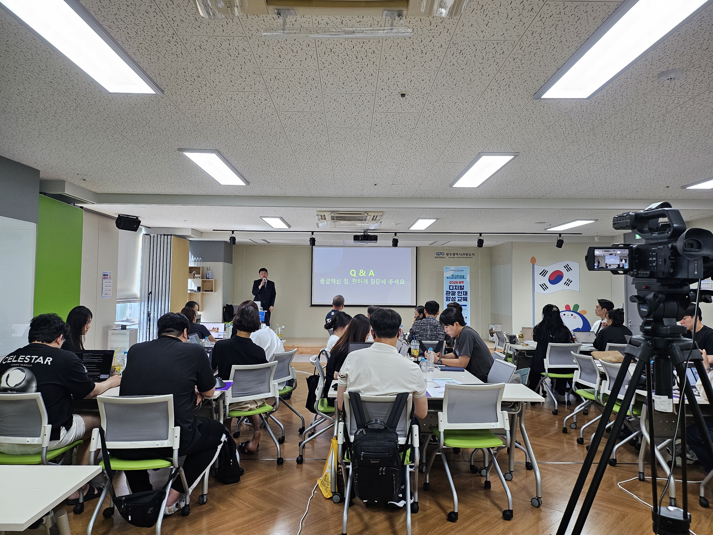
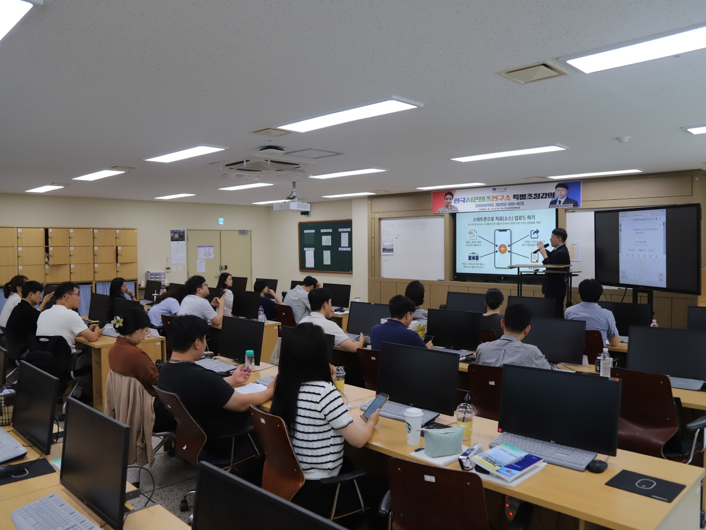
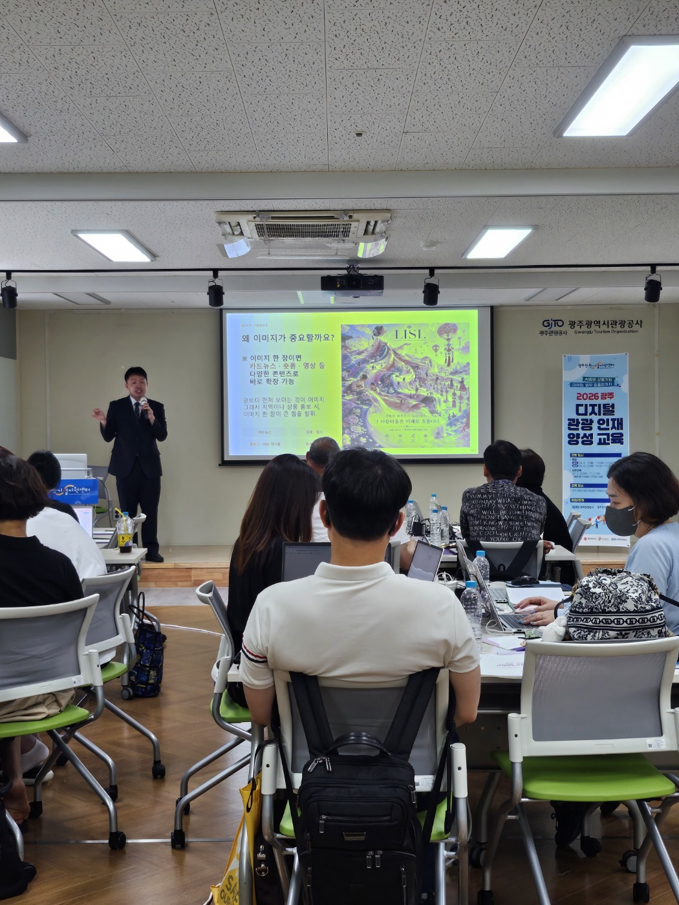

생소한 프롬프트
무엇을 어떻게 질문해야 원하는 결과가 나오는지 어렵습니다.
PRACTICAL AI EDUCATION · 맞춤형 실습 교육
기업·공공기관을 위한 생성형 AI 교육.
초보자도 직접 만들고, 바로 적용합니다.
TRUSTED IN THE FIELD
이론에 그치지 않고, 조직의 업무와 교육생의 눈높이를 함께 고려합니다.
* 페이지 기획 및 제공 자료에 명시된 범위 기준
생성형 AI 활용 전문가·콘텐츠 강사 자격증
한국AI콘텐츠연구소 협력강사
사무자동화산업기사 · 사회복지사 1급
평생교육사 2급 · 정사서 2급 · 직업상담사 2급
THE REAL PROBLEM
무엇을 어떻게 질문해야 원하는 결과가 나오는지 어렵습니다.
이미지와 숏폼을 만드는 데 시간과 비용이 많이 듭니다.
강의를 들을 때는 알겠는데 내 기획서에 적용하면 막힙니다.
BEFORE → TRAINING → AFTER
실제 자료에 확인된 교육 사례를 문제·실습·결과 구조로 정리했습니다.
기관 및 프로그램을 효과적으로 홍보할 수단이 부족했습니다.
이미지·영상 생성과 숏폼 제작을 직접 실습했습니다.
제작한 홍보 영상을 기관 홍보에 활용하고, 기관 표창·수상 성과로 연결했습니다.
현장 마케팅에 즉시 활용할 홍보 콘텐츠가 필요했습니다.
프롬프트 작성, AI 챗봇, CRM 마케팅을 실습했습니다.
당일 완성한 결과물을 단체 채팅방에 공유하고 현업 마케팅에 활용했습니다.
HOW I TEACH
개념부터 결과물 완성까지, 질문이 생기는 순간 바로 피드백합니다.
AI 기본 원리와 목적에 맞는 질문을 배웁니다.
AI 도구를 직접 조작해 결과물을 만듭니다.
개별 작업물에 맞춰 수정하고 보완합니다.
교육 당일 완성한 결과물을 업무에 활용합니다.
PROGRAMS
기관과 기업의 업무, 수강생 수준, 원하는 산출물에 맞춰 교육 내용을 설계합니다.
이미지·카드뉴스·숏폼 영상·AI 음악으로 브랜딩 콘텐츠를 제작합니다.
홍보 담당자 · 마케터 · 중소상공인ChatGPT, Gemini, NotebookLM으로 문서 요약, 자료 분석, 행정 업무의 효율을 높입니다.
기업 임직원 · 공공기관 · 교무행정원원하는 결과를 이끌어내는 프롬프트와 제안서·기획서 작성 실무를 익힙니다.
기획자 · 영업·제안 담당자SAMPLE CURRICULUM · 120 MIN
수원시청 7~8급 공무원 대상 커리큘럼 샘플입니다.
앱 설치 · 계정 로그인 · 새 노트북 만들기
결과물: 나만의 노트북공개 PDF 소스 추가 · 요약 · 출처 확인
결과물: 소스 기반 답변오디오 개요 · 플래시카드 · 퀴즈 생성
결과물: 오디오·학습 자료공개자료로 인포그래픽 또는 슬라이드 완성
결과물: 공유 가능한 시각 자료※ 공개자료만 활용하며, AI 결과물은 초안으로 취급하고 최종 검토 책임을 안내합니다.
IN THE CLASSROOM
실제 교육 현장의 분위기를 보여주는 강의 기록입니다.





.png) INSTRUCTOR
INSTRUCTORINSTRUCTOR PROFILE
한국AI콘텐츠연구소 온·오프라인 협력강사. 생성형 AI 활용과 콘텐츠 제작, 업무 효율화 교육을 실습 중심으로 진행합니다.
전문 분야 생성형 AI · 업무 자동화 · AI 콘텐츠 제작 · 프롬프트
주요 배경 사회복지사 1급 · 평생교육사 2급 · 정사서 2급 · 직업상담사 2급 · 사무자동화산업기사
TRACK RECORD / AI TOOLKIT
THE PROCESS
일정, 대상, 기본 요구사항을 전달합니다.
수강생 수준과 교육 목표를 협의합니다.
기관에 맞는 강의안과 실습 자료를 구성합니다.
실시간 실습과 사후 점검으로 마무리합니다.
FAQ
가능합니다. 눈높이에 맞춘 기초부터 시작하고, 실시간 피드백으로 따라올 수 있도록 진행합니다.
사전 미팅을 통해 업종, 실무 과제, 원하는 결과물에 맞춰 커리큘럼을 제안합니다.
교육 방식에 따라 개인 PC 또는 모바일 기기가 필요하며, 필요한 무료 AI 도구는 사전에 안내합니다.
전국 온·오프라인 출강이 가능하며, 인원 규모와 환경에 맞춰 실습 방식을 조정합니다.
START A CONVERSATION
교육 대상, 일정, 원하는 결과물을 알려주시면 맞춤형 커리큘럼을 제안드립니다.